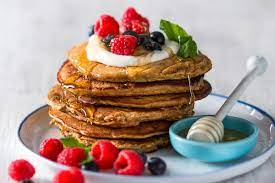

Ami's Flapjacks

Description
Ami's Flapjack Recipe is a divine treat for those of us with a little too
much of a sweet tooth. This recipe consists of soft fluffy homemade
flapjacks with maples syrup and rasberries as the icing on the 'cake'.
Ingredients
1 and a half cup of baking flour, 2 tsp of baking powder, an eighth of
salt, 2 beaten eggs, a quarter cup of sugar, 1 cup of milk (250 ml), 2
tbsp of butter (melted). Toppings include maples syrup, honey syrup,
rasberries and blueberries
Steps
Mix all the above ingredients in a big bowl using a whisk or a mixer. Do
this until the mixture turns to a smooth batter without any lumps. If
there are any lumps whisk a way until they disappear.
Now that the batter is smooth and lump free, you can let it rest in the
fridge foe 30 minutes to an hour.
After the batter has rested you can warm up the pan and lightly drizzle
some oil into it. Grab a kitchen utensil to scoop out the batter from the
bowl. Once the pan has heated you can add the batter to the pan. Let it
bake till the bottom is no longer sticky and then flip.
Repeat Number 3 until the batter is finished.
Now you can plate your Flapjacks and add your toppings. PS. don't be shy
add as many as you would like!